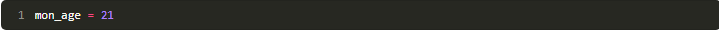
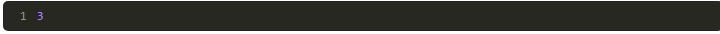
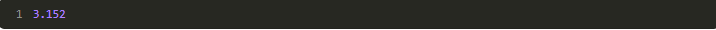
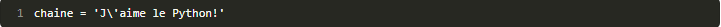
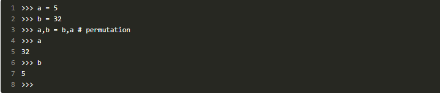
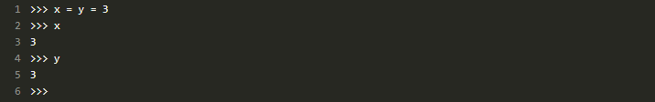
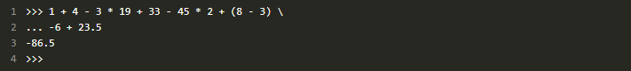

Chapitre 2 : Le monde des variables
nous allons commencer à approfondir un petit peu la syntaxe du langage, tout en découvrant un concept important de la programmation : les variables.Ce concept est essentiel et vous ne pouvez absolument pas faire l'impasse dessus. Mais je vous rassure, il n'y a rien de compliqué, que de l'utile et de l'agréable.
-
C'est quoi, une variable ?
Une variable est une donnée de votre programme, stockée dans votre ordinateur. C'est un code alpha-numérique que vous allez lier à une donnée de votre programme, afin de pouvoir l'utiliser à plusieurs reprises et faire des calculs un peu plus intéressants avec. C'est bien joli de savoir faire des opérations mais, si on ne peut pas stocker le résultat quelque part, cela devient très vite ennuyeux.Voyez la mémoire de votre ordinateur comme une grosse armoire avec plein de tiroirs. Chaque tiroir peut contenir une donnée ; certaines de ces données seront des variables de votre programme.
-
Comment cela fonctionne-t-il ?
Le plus simplement du monde. Vous allez dire à Python : « je veux que, dans une variable que je nommeage, tu stockes mon âge, pour que je puisse le retenir (si j'ai la mémoire très courte), l'augmenter (à mon anniversaire) et l'afficher si besoin est ».
Comme je vous l'ai dit, on ne peut pas passer à côté des variables. Vous ne voyez peut-être pas encore tout l'intérêt de stocker des informations de votre programme et pourtant, si vous ne stockez rien, vous ne pouvez pratiquement rien faire.En Python, pour donner une valeur à une variable, il suffit d'écrirenom_de_la_variable = valeur.
Une variable doit respecter quelques règles de syntaxe incontournables :
- Le nom de la variable ne peut être composé que de lettres, majuscules ou minuscules, de chiffres et du symbole souligné « _ » (appelé underscore en anglais).
- Le nom de la variable ne peut pas commencer par un chiffre.
- Le langage Python est sensible à la casse, ce qui signifie que des lettres majuscules et minuscules ne constituent pas la même variable (la variableAGEest différente deaGe, elle-même différente deage).
Au-delà de ces règles de syntaxe incontournables, il existe des conventions définies par les programmeurs eux-mêmes. L'une d'elles, que j'ai tendance à utiliser assez souvent, consiste à écrire la variable en minuscules et à remplacer les espaces éventuels par un espace souligné « _ ». Si je dois créer une variable contenant mon âge, elle se nommera doncmon_age. Une autre convention utilisée consiste à passer en majuscule le premier caractère de chaque mot, à l'exception du premier mot constituant la variable. La variable contenant mon âge se nommerait alorsmonAge.Vous pouvez utiliser la convention qui vous plaît, ou même en créer une bien à vous, mais essayez de rester cohérent et de n'utiliser qu'une seule convention d'écriture. En effet, il est essentiel de pouvoir vous repérer dans vos variables dès que vous commencez à travailler sur des programmes volumineux.Ainsi, si je veux associer mon âge à une variable, la syntaxe sera :
L'interpréteur vous affiche aussitôt trois chevrons sans aucun message. Cela signifie qu'il a bien compris et qu'il n'y a eu aucune erreur.Sachez qu'on appelle cette étape l'affectation de valeur à une variable (parfois raccourci en « affectation de variable »). On dit en effet qu'on a affecté la valeur 21 à la variablemon_age.On peut afficher la valeur de cette variable en la saisissant simplement dans l'interpréteur de commandes.

-
Les types de données en Python
Là se trouve un concept très important, que l'on retrouve dans beaucoup de langages de programmation. Ouvrez grand vos oreilles, ou plutôt vos yeux, car vous devrez être parfaitement à l'aise avec ce concept pour continuer la lecture de ce livre. Rassurez-vous toutefois, du moment que vous êtes attentifs, il n'y a rien de compliqué à comprendre
Les nombres entiers
Le type entier se nommeinten Python (qui correspond à l'anglais « integer », c'est-à-dire entier). La forme d'un entier est un nombre sans virgule.
Les nombres flottants
Les flottants sont les nombres à virgule. Ils se nommentfloaten Python (ce qui signifie « flottant » en anglais). La syntaxe d'un nombre flottant est celle d'un nombre à virgule (n'oubliez pas de remplacer la virgule par un point). Si ce nombre n'a pas de partie flottante mais que vous voulez qu'il soit considéré par le système comme un flottant, vous pouvez lui ajouter une partie flottante de 0 (exemple 52.0).
Les nombres après la virgule ne sont pas infinis, puisque rien n'est infini en informatique. Mais la précision est assez importante pour travailler sur des données très fines.
Les chaînes de caractères
Heureusement, les types de données disponibles en Python ne sont pas limités aux seuls nombres, bien loin de là. Le dernier type « simple » que nous verrons dans ce chapitre est la chaîne de caractères. Ce type de donnée permet de stocker une série de lettres, pourquoi pas une phrase.On peut écrire une chaîne de caractères de différentes façons :
- entre guillemets ("ceci est une chaîne de caractères") ;
- entre apostrophes ('ceci est une chaîne de caractères') ;
- entre triples guillemets ("""ceci est une chaîne de caractères""").
Ceci est dû au fait que l'apostrophe de « J'aime » est considérée par Python comme la fin de la chaîne et qu'il ne sait pas quoi faire de tout ce qui se trouve au-delà.Pour pallier ce problème, il faut échapper les apostrophes se trouvant au cœur de la chaîne. On insère ainsi un caractère anti-slash « \ » avant les apostrophes contenues dans le message.
Quelques trucs et astuces pour vous faciliter la vie
Python propose un moyen simple de permuter deux variables (échanger leur valeur). Dans d'autres langages, il est nécessaire de passer par une troisième variable qui retient l'une des deux valeurs… ici c'est bien plus simple :
Comme vous le voyez, après l'exécution de la ligne 3, les variablesaetbont échangé leurs valeurs. On retrouvera cette distribution d'affectation bien plus loin.On peut aussi affecter assez simplement une même valeur à plusieurs variables :
Enfin, ce n'est pas encore d'actualité pour vous mais sachez qu'on peut couper une instruction Python, pour l'écrire sur deux lignes ou plus.
